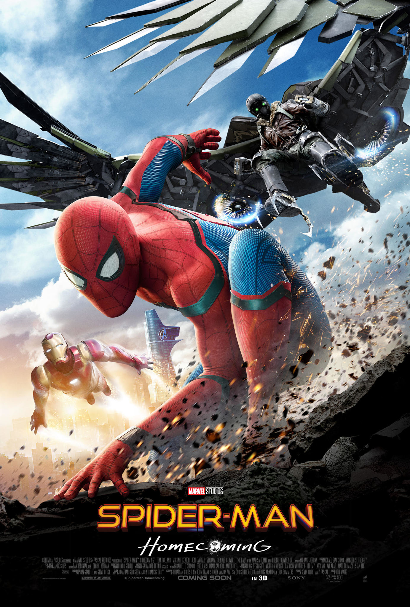

New York City teenager Miles Morales struggles to live up to the expectations of his father, police officer Jefferson Davis, who sees Spider-Man as a menace. Miles' uncle Aaron Davis takes him to an abandoned subway station to paint graffiti to cheer him up. There, Miles is bitten by a radioactive spider and gains abilities similar to Spider-Man. Returning to the station, he discovers a collider built by Kingpin, who hopes to access parallel universes to abduct alternate versions of his late wife and son. Spider-Man attempts to disable the collider while fighting Kingpin's enforcers, the Green Goblin and Prowler.
Green Goblin shoves Spider-Man into the collider, causing an explosion that kills the former and wounds the latter, who then gives Miles a USB flash drive designed to disable the collider, warning that the machine could destroy the city if reactivated. After watching in horror as Kingpin murders Spider-Man, Miles flees. As the city mourns Spider-Man's death, Miles tries to honor his legacy and become the new Spider-Man but inadvertently damages the drive. At Spider-Man's grave, he meets Peter B. Parker, an older and worn-down version of Spider-Man from another dimension.
The duo infiltrate Kingpin's research facility to steal data for a new flash drive. They are confronted by head scientist Olivia Octavius, who discovers that Peter will die from cellular decay if he remains in their dimension. Miles and Peter are then saved by Gwen Stacy, a Spider-Woman from another dimension. They visit Spider-Man's aunt, May Parker; she is sheltering more Spider-People who slipped into Miles' universe from other dimensions due to the collider's influence—Spider-Man Noir, Peni Parker, and Spider-Ham—who are also deteriorating. Miles offers to help the others return home but they tell him he lacks experience.
Distraught, Miles retreats to Aaron's home, where he discovers his uncle is the Prowler. He flees to May's house, where the new drive is completed by Peni; he is followed by Kingpin, Aaron, Octavius, Scorpion, and Tombstone. In the ensuing brawl, he reveals his identity to Aaron. Unwilling to kill his own nephew, Aaron attempts to spare Miles, but is fatally shot by Kingpin in retaliation and dies in Miles' arms. Miles flees just as Jefferson arrives on the scene; he mistakes the new Spider-Man as his brother's murderer. The heroes regroup with a devastated Miles. Unwilling to let Miles get killed, Peter restrains Miles with his webs for his safety and chooses to sacrifice himself by staying behind and deactivating the collider.
Jefferson arrives outside Miles' door and apologizes for his mistakes and expresses his faith in Miles, inspiring him. Miles manages to control his powers, escapes his restraints, and creates his own Spider-Man suit. He joins the other Spider-People in defeating Kingpin's enforcers, and uses the new drive to send them home. Kingpin fights Miles, attracting the attention of Jefferson. Realizing that Spider-Man is not the menace he saw him as, he encourages Miles, who throws Kingpin at the collider's kill switch, destroying it. The city is saved, Kingpin and his henchmen are arrested and Jefferson receives evidence of Kingpin's murders of Spider-Man and Aaron.
Miles embraces the responsibilities of his new life. Later, Gwen finds a way to contact Miles from her own dimension.[a] Elsewhere, Miguel O'Hara, also known as Spider-Man 2099, travels to Earth-67 and argues with its Spider-Man.